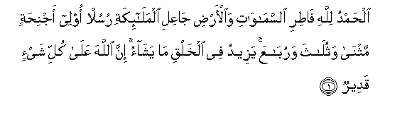
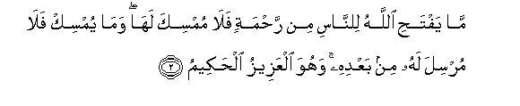
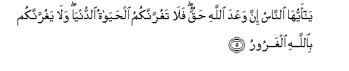
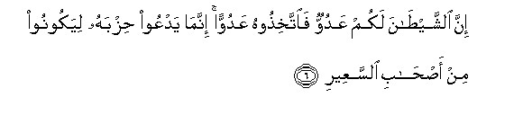
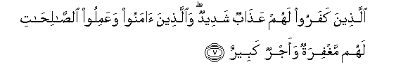

Sacred Texts Islam Index
Hypertext Qur'an Unicode Palmer Pickthall Yusuf Ali English Rodwell
Sūra XXXV.: Fāṭir, or The Originator of Creation; or Malāïka, or The Angels. Index
Previous Next

The Holy Quran, tr. by Yusuf Ali, [1934], at sacred-texts.com
Sūra XXXV.: Fāṭir, or The Originator of Creation; or Malāïka, or The Angels.
Section 1

1. Alhamdu lillahi fatiri alssamawati waal-ardi jaAAili almala-ikati rusulan olee ajnihatin mathna wathulatha warubaAAa yazeedu fee alkhalqi ma yashao inna Allaha AAala kulli shay-in qadeerun
1. Praise be to God,
Who created (out of nothing)
The heavens and the earth,
Who made the angels
Messengers with wings,—
Two, or three, or four (Pairs):
He adds to Creation
As He pleases: for God
Has power over all things.

2. Ma yaftahi Allahu lilnnasi min rahmatin fala mumsika laha wama yumsik fala mursila lahu min baAAdihi wahuwa alAAazeezu alhakeemu
2. What God out of His Mercy
Doth bestow on mankind
There is none can withhold:
What He doth withhold,
There is none can grant,
Apart from Him:
And He is the Exalted
In Power, Full of Wisdom.
3. Ya ayyuha alnnasu othkuroo niAAmata Allahi AAalaykum hal min khaliqin ghayru Allahi yarzuqukum mina alssama-i waal-ardi la ilaha illa huwa faanna tu/fakoona
3. O men! call to mind
The grace of God unto you!
Is there a Creator, other
Than God, to give you
Sustenance from heaven
Or earth? There is
No god but He: how
Then are ye deluded
Away from the Truth?
4. Wa-in yukaththibooka faqad kuththibat rusulun min qablika wa-ila Allahi turjaAAu al-omooru
4. And if they reject thee,
So were apostles rejected
Before thee: to God
Go back for decision
All affairs.

5. Ya ayyuha alnnasu inna waAAda Allahi haqqun fala taghurrannakumu alhayatu alddunya wala yaghurrannakum biAllahi algharooru
5. O men! certainly
The promise of God
Is true. Let not then
This present life deceive you,
Nor let the Chief Deceiver
Deceive you about God.

6. Inna alshshaytana lakum AAaduwwun faittakhithoohu AAaduwwan innama yadAAoo hizbahu liyakoonoo min as-habi alssaAAeeri
6. Verily Satan is an enemy
To you: so treat him
As an enemy. He only
Invites his adherents,
That they may become
Companions of the Blazing Fire.

7. Allatheena kafaroo lahum AAathabun shadeedun waallatheena amanoo waAAamiloo alssalihati lahum maghfiratun waajrun kabeerun
7. For those who reject God,
Is a terrible Penalty: but
For those who believe
And work righteous deeds,
Is Forgiveness, and
A magnificent Reward.